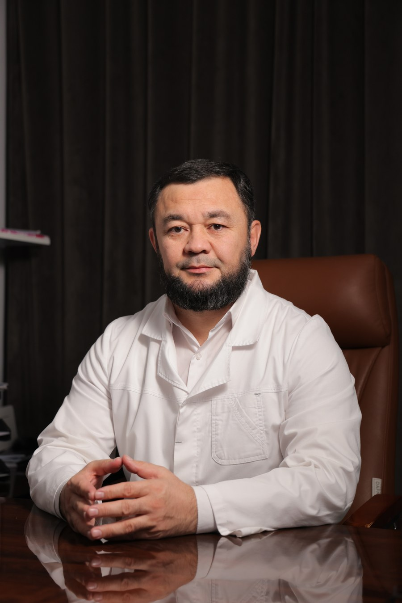

Бўғим ва суяклар йиллар ўтиб нега заифлашади — ва бунга қандай қилиб табиий, безарар йўллар билан ечим топиш мумкин

Собир Саид
«Сунна Мед» клиникалар тармоғи асосчиси. Жамоамиз билан бирга бугунгача 30 000 дан зиёд инсонларни табиий усуллар ва шарқ табобати ёрдамида турли касалликлардан даволанишида хизмат қилдик.
Вебинарда нималар бўлади
- Бўғим ва суяклар қандай тузилган ва ёш билан уларда нима ўзгаради
- Ҳаракат, овқатланиш ва вазн бўғимларга қандай таъсир қилади
- Кундалик одатлар орқали бўғимларни қўллаб-қувватлаш
- Қўшимча ва воситаларни танлашда нимага эътибор бериш керак
- Жонли савол-жавоб
Рўйхатдан ўтиш
Вебинар каналига қўшилиш учун маълумотларингизни киритинг.